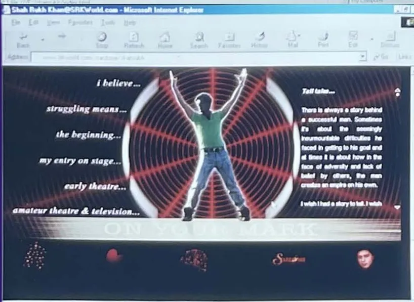
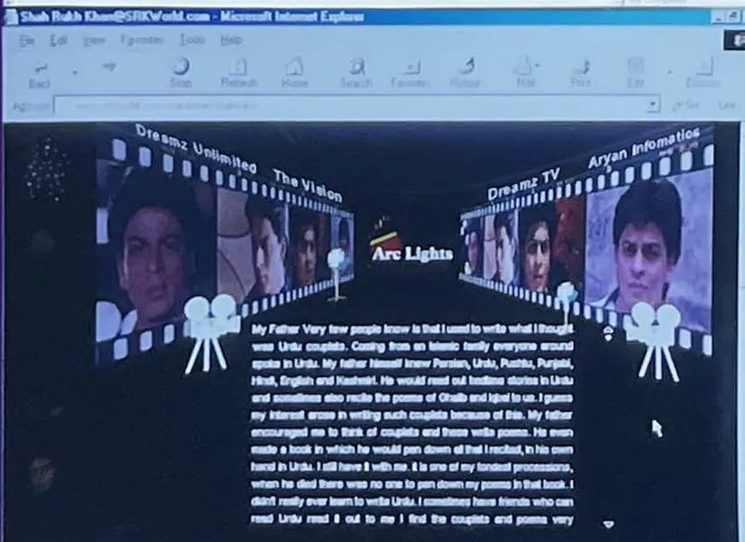

The thesis · by Shailja Gupta
SRK: The Man, The Myth, The King
The first 360-degree thesis on Shah Rukh Khan: the man, the myth his fans now write themselves, and the King he became. Working manuscript; chapters are added daily.
 4 sections · 4 minOpeningThe map, the method and the prologueStart this part →
4 sections · 4 minOpeningThe map, the method and the prologueStart this part → 10 sections · 69 minPart One · The ManRise, 1946 to 20091946 to 2009. How an outsider from Delhi became the most recognisable face in Indian cinema, tried to build a digital kingdom before the internet was ready, and became an institution.Start this part →
10 sections · 69 minPart One · The ManRise, 1946 to 20091946 to 2009. How an outsider from Delhi became the most recognisable face in Indian cinema, tried to build a digital kingdom before the internet was ready, and became an institution.Start this part → Chapter 1Diaper Days · Childhood, 1946 to 19755 min read
Chapter 1Diaper Days · Childhood, 1946 to 19755 min read Chapter 2From School To Cool · School, 1970 to 19853 min read
Chapter 2From School To Cool · School, 1970 to 19853 min read
Chapter 3Campus Cackle · College and theatre, 1985 to 19884 min read Chapter 4TV Cereal · Television, 1988 to 19914 min readChapter 5The Wall · Films, 1992 to 1998: the villain who became the lover8 min readRoomRam To Krishna · Home and work4 min read
Chapter 4TV Cereal · Television, 1988 to 19914 min readChapter 5The Wall · Films, 1992 to 1998: the villain who became the lover8 min readRoomRam To Krishna · Home and work4 min read Chapter 6Going Digital · The producer, the website and the fall, 1999 to 200319 min read
Chapter 6Going Digital · The producer, the website and the fall, 1999 to 200319 min read Chapter 7Opening Office · The institution, 2004 to 200911 min read
Chapter 7Opening Office · The institution, 2004 to 200911 min read
RoomArclightZ · The producer6 min read RoomAdvantage · Advertising5 min read
RoomAdvantage · Advertising5 min read 4 sections · 19 minPart Two · One Before ZeroThe Marketing Express, 2010 to 2013By 2009 he was an institution. In the next four years he turned the direct line into a system, and sold three films in three new ways: with a stock exchange, a superhero universe and a train.Start this part →
4 sections · 19 minPart Two · One Before ZeroThe Marketing Express, 2010 to 2013By 2009 he was an institution. In the next four years he turned the direct line into a system, and sold three films in three new ways: with a stock exchange, a superhero universe and a train.Start this part → 4 sections · 16 minPart Three · Asoka to Boo-DaMute Button, 2014 to 2022In 2001 he played Asoka, the emperor who conquered everything, saw the cost at Kalinga, and gave up his sword for the Buddha's path.Start this part →
4 sections · 16 minPart Three · Asoka to Boo-DaMute Button, 2014 to 2022In 2001 he played Asoka, the emperor who conquered everything, saw the cost at Kalinga, and gave up his sword for the Buddha's path.Start this part →
 2 sections · 9 minPart Four · EncoreThe return, 2023 to 2026He came back on his own terms: no media tour, no explaining, only the films, the fans and the balcony.Start this part →
2 sections · 9 minPart Four · EncoreThe return, 2023 to 2026He came back on his own terms: no media tour, no explaining, only the films, the fans and the balcony.Start this part → 4 sections · 17 minPart Five · KING Size2026The last movement belongs to the fans. In 2026, before the studio shows a frame, the audience he spent thirty-five years reaching starts building the King itself.Start this part →
4 sections · 17 minPart Five · KING Size2026The last movement belongs to the fans. In 2026, before the studio shows a frame, the audience he spent thirty-five years reaching starts building the King itself.Start this part → 4 sections · 15 minPart Six · Log OutWhat the arc meansFive Parts told the story in order. This one asks what it adds up to: for him, for Indian cinema, and for every brand that has a face, a story and a community.Start this part →
4 sections · 15 minPart Six · Log OutWhat the arc meansFive Parts told the story in order. This one asks what it adds up to: for him, for Indian cinema, and for every brand that has a face, a story and a community.Start this part →